Resumen
Bot de Telegram que recibe la foto de un residuo y responde con inteligencia artificial qué es, de qué material está hecho, cómo se clasifica, si se recicla, a dónde va y cuánto tarda en degradarse. Se armó sin programar, con Telegram (BotFather) y Make (Make AI Agent con visión).
Escenario en Make
Un filtro deja pasar solo los mensajes que traen foto, y last() toma la foto de mayor calidad que manda Telegram. La configuración de cada módulo está en codigo/configuracion_make.md y las instrucciones del agente en codigo/instrucciones_ai_agent.txt.

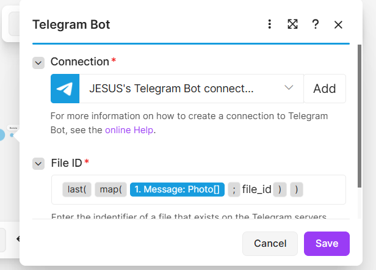

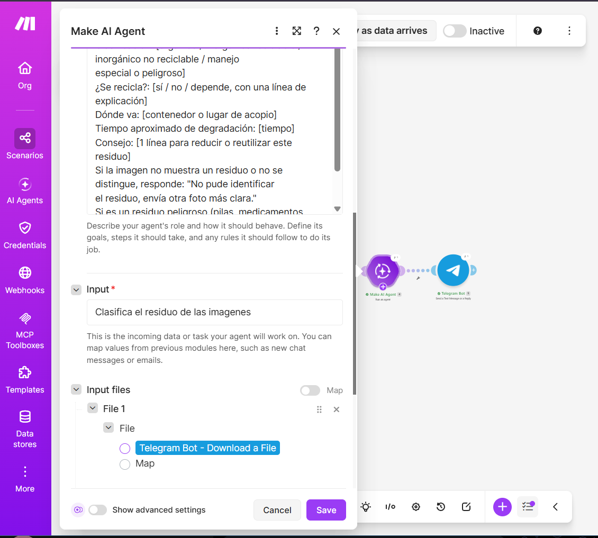

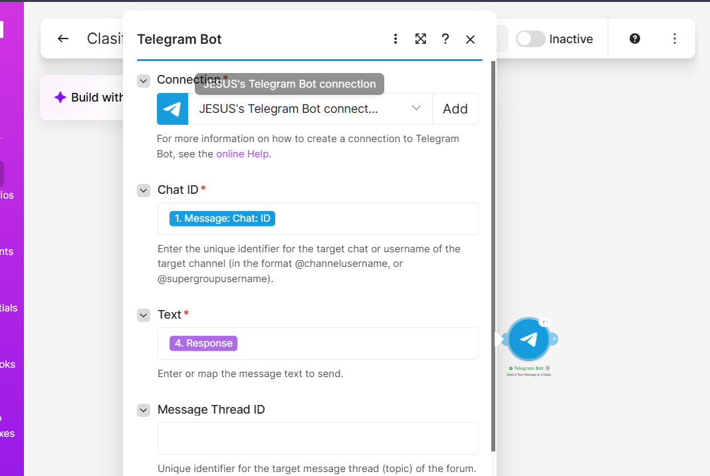

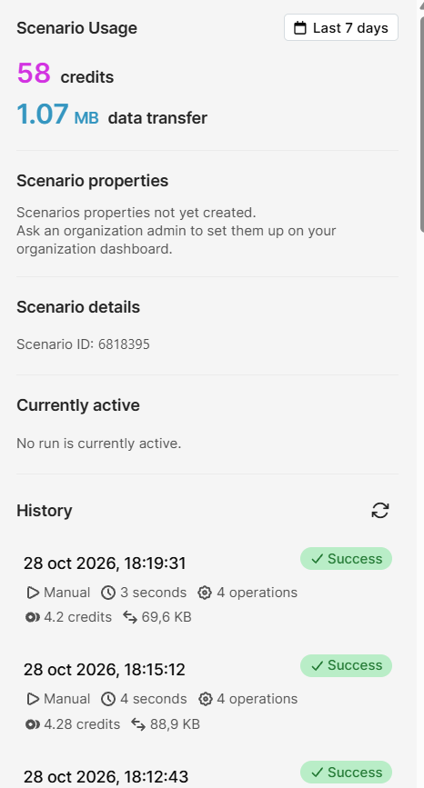
Video
Abrir el video en YouTube (no listado: solo se ve con este enlace)
Resultados
Se probaron 10 residuos reales y se verificó cada respuesta contra fuentes confiables.
| # | Residuo | Clasificación de la IA | ¿Correcta? |
|---|---|---|---|
| 1 | Trapo de tela verde | Inorgánico reciclable | Parcial |
| 2 | Botella PET | Inorgánico reciclable | Sí |
| 3 | Zapato deportivo | Inorgánico no reciclable | Sí |
| 4 | Cable eléctrico con enchufe | Manejo especial o peligroso | Sí |
| 5 | Peluche | Inorgánico no reciclable | Sí |
| 6 | Desodorante en barra (envase) | Inorgánico reciclable | Sí |
| 7 | Lata de aluminio | Inorgánico reciclable | Sí |
| 8 | Folleto de papel | Orgánico | No |
| 9 | Bolsa de plástico | Inorgánico reciclable | Sí |
| 10 | Control remoto | Manejo especial o peligroso | Sí |
La tabla completa con tiempos de degradación y fuentes, la investigación y las preguntas de reflexión están en el reporte: PDF · Word.
Pruebas con el bot

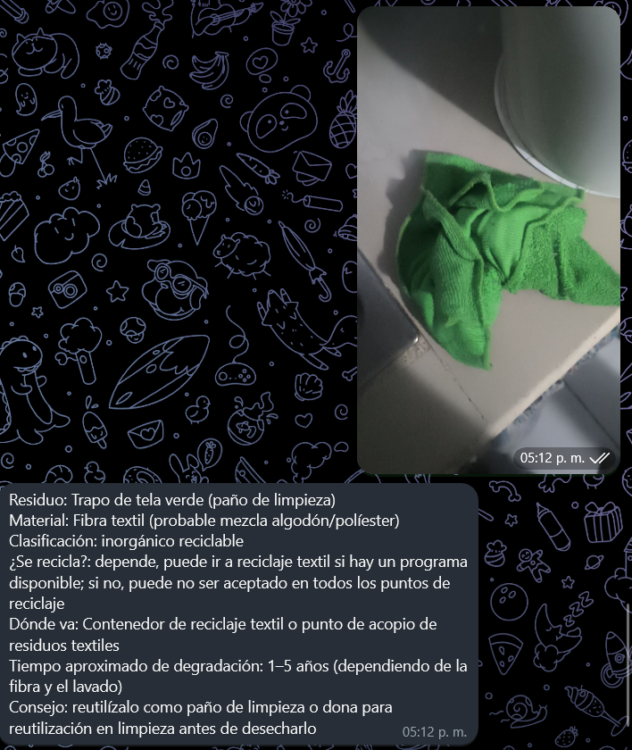

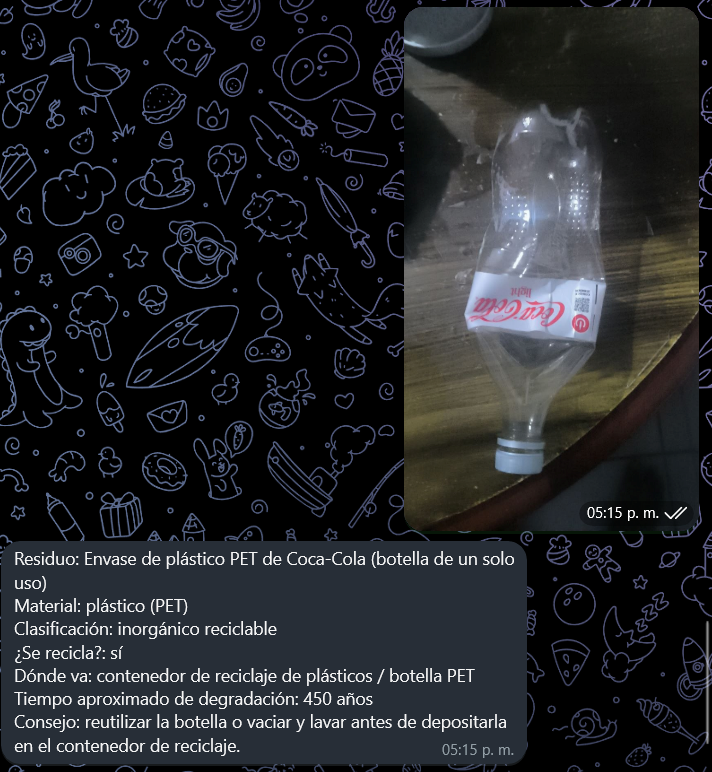

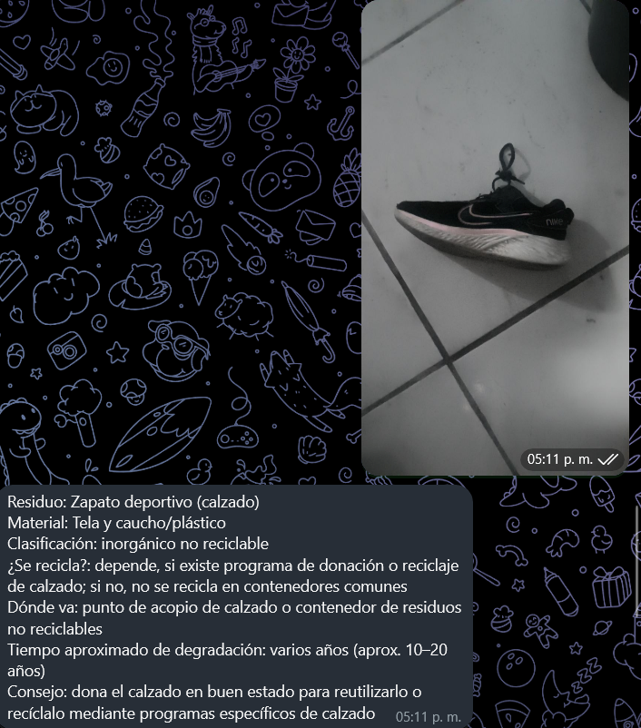

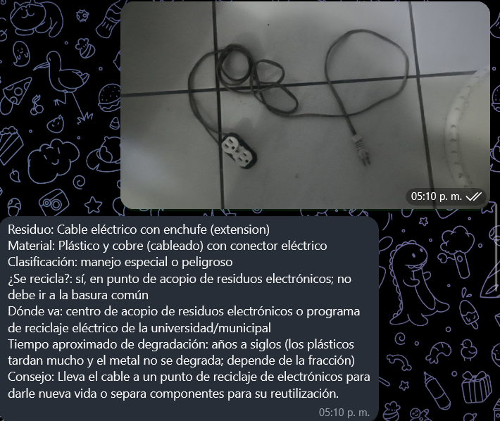

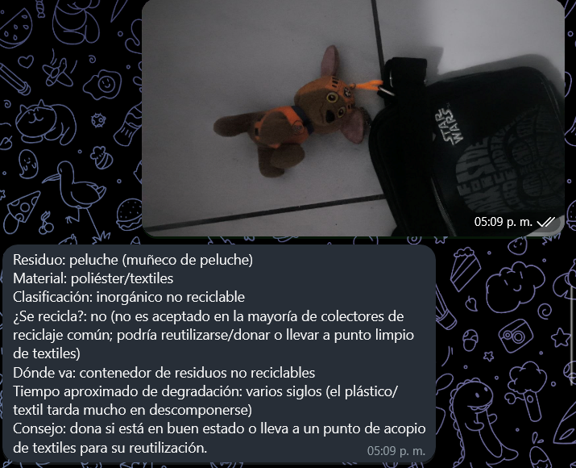

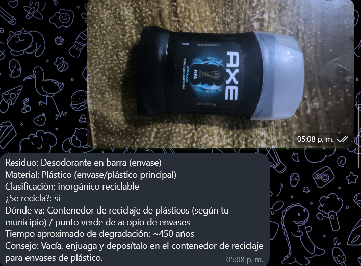

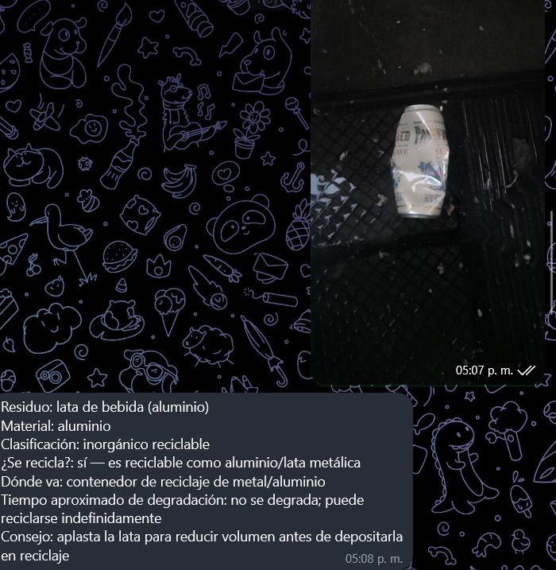

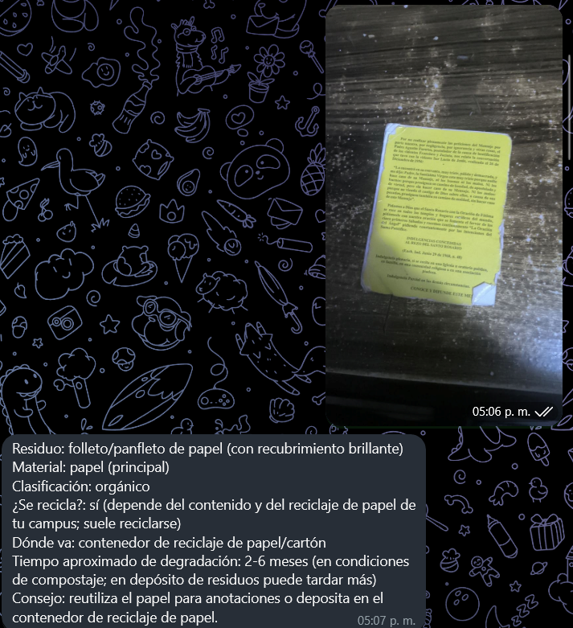

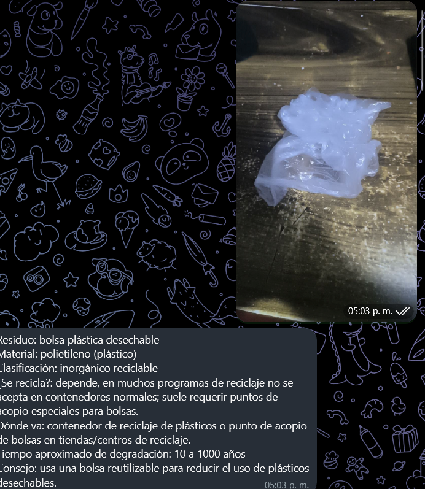

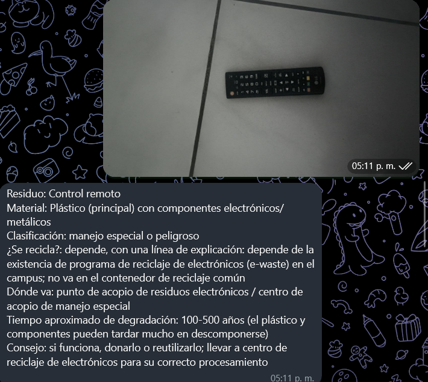